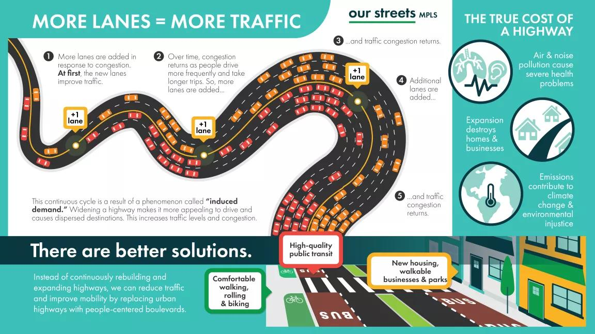
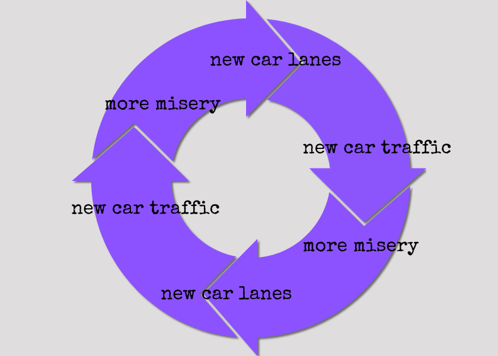

What is Induced Demand?
Induced demand is a concept in transportation planning that suggests increasing the supply of a good, such as road capacity, makes people want to use that good even more. In the context of highways, this means that adding more lanes or building new roads often leads to more traffic, not less.
How Does Induced Demand Work?
When a new road is built or an existing road is widened, it initially reduces congestion, making driving more convenient. This increased convenience encourages more people to drive, including those who previously used public transportation, biked, or walked. Over time, the number of vehicles on the road increases, and congestion returns to its previous levels or worsens. This cycle can lead to a continuous demand for more road expansions.
Evidence of Induced Demand
Many studies have demonstrated the effects of induced demand. For example, a study of California’s highway system found that a 10% increase in road capacity led to a 9% increase in traffic within a few years. Similar findings have been observed in cities around the world, indicating that simply building more roads is not a sustainable solution to traffic congestion.
Implications for Urban Planning
Understanding induced demand is crucial for urban planners and policymakers. Instead of focusing solely on increasing road capacity, cities can invest in alternative transportation methods, such as public transit, biking, and walking infrastructure. These investments can provide more sustainable and long-term solutions to transportation challenges, reducing reliance on cars and improving overall urban mobility.